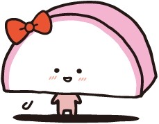
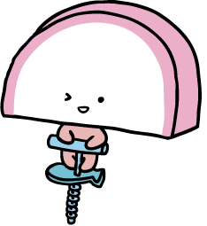
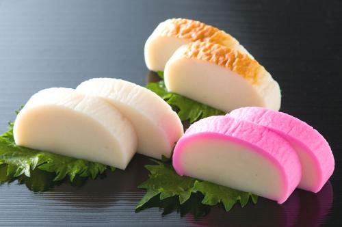
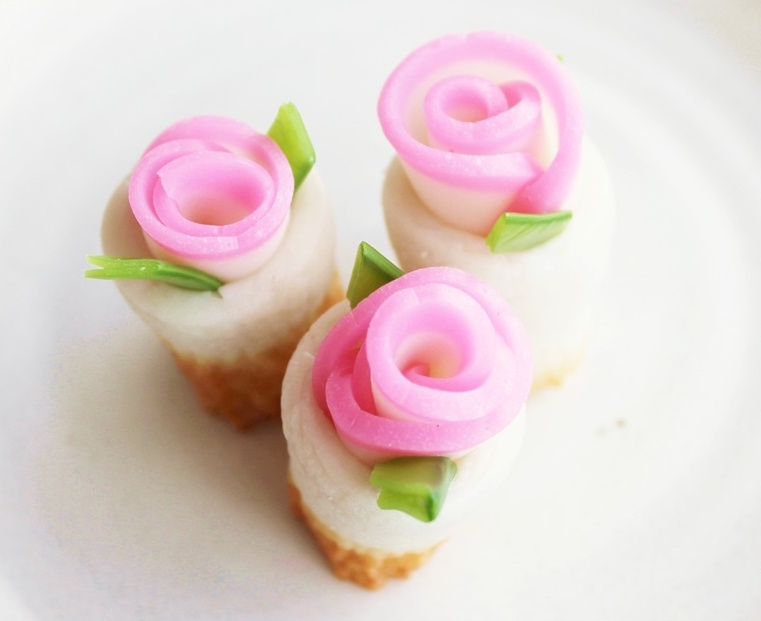
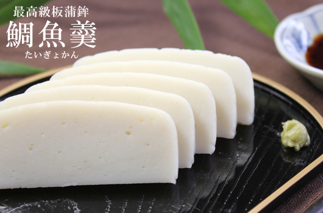

I love KAMABOKO.
最強の食品を求めるなら 我々の注文ページをぜひご覧ください!
あなたにぴったりのかまぼこが見つかるはずですよ。

蒸しかまぼこ
板にすり身を盛りつけた後、蒸し上げたもの。山高で透き通るように白い、しわのないきめ細かな外観と、弾力のある食感を持つ。蒸気での加熱は江戸時代からで、現在では、かまぼこといえば「板付きかまぼこ」のことを思い浮かべる。

揚げかまぼこ
揚げかまぼこ（あげかまぼこ）は、魚のすり身を調味・加工して揚げたものの総称。魚肉練り製品・蒲鉾の分類の一つ。「揚げかま」「天ぷら」「テンプラ」「○○天」「つけあげ」「はんぺん」とも称される。

バラエティかまぼこ
かまぼこはバラエティ豊か。定番となったカニカマ、ちくわに沖縄独特のバクダンかまぼこ（おにぎりかまぼこ）。毎日食べても飽きがこない楽しさ。

かまぼこの健康効果
かまぼこが栄養価の高い食材であることをご存知でしたか。
かまぼこは私たちの健康維持に欠かせないタンパク質を豊富に含んでいます。
人間の体の60～70％は水分ですが、次に多いのがタンパク質で20％をしめています。
筋肉や胃腸などの臓器、皮膚といった組織から酵素やホルモン、血液まで、そのほとんどを作る上でタンパク質が必要です。
- 健康、美肌、筋力アップ
- 低脂肪、低カロリー
- 様々なアレンジ
- 彩りで食欲アップ
そのまま食べる。
まず、そのまま食べていただきたい。
凝縮された魚の旨みを味わいましょう。

アレンジを楽しむ。
彩り豊かなかまぼこ達を使って、
食卓を鮮やかに。

極上のかまぼこを。
食材から全てをこだわり抜いた逸品。
天皇御用達。